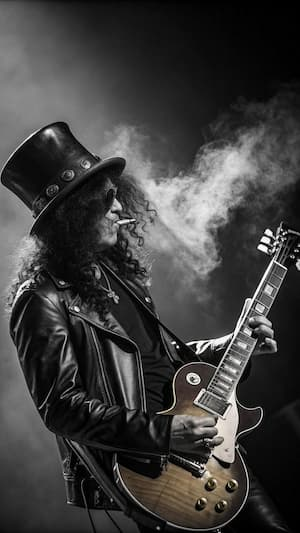
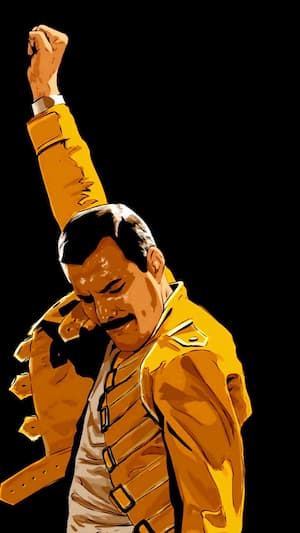
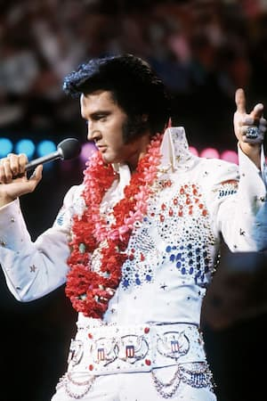
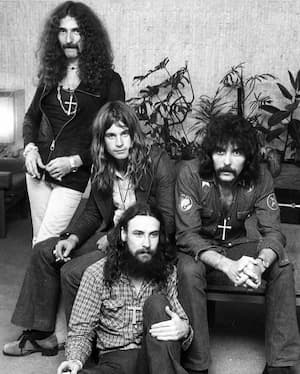
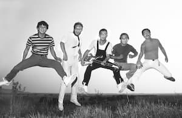
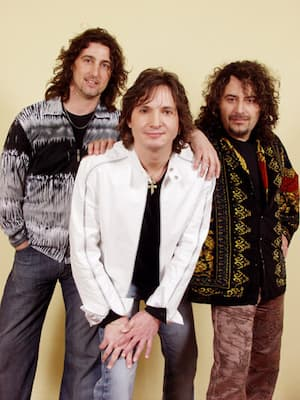

Známi rockoví interpreti
Zahraničná scéna
Rocková hudba by nebola taká, aká je, nebyť kapiel a spevákov, ktorí ju formovali po celom svete. Elvis Presley položil základy rock and rollu a The Rolling Stones ho posunuli k tvrdšiemu, bluesovému zvuku. Pink Floyd rozšírili hranice rocku o progresívne a experimentálne skladby, Led Zeppelin a AC/DC definovali tvrdý zvuk hard rocku a Black Sabbath sa stali zakladateľmi heavy metalu. Alice Cooper a Kiss do rocku priniesli divadelnosť a okázalé show, Queen zase nezabudnuteľné hymny. Aerosmith, Bon Jovi a Guns N' Roses potom ovládli pódiá v 70., 80. a 90. rokoch a ich skladby poznajú ľudia dodnes.
| Interpret | Najznámejšie skladby |
|---|---|
| Elvis Presley | Jailhouse Rock, Hound Dog |
| The Rolling Stones | Paint It Black, Gimme Shelter |
| Pink Floyd | Another Brick in the Wall, Comfortably Numb |
| Led Zeppelin | Stairway to Heaven, Kashmir |
| Black Sabbath | Paranoid, Iron Man |
| Alice Cooper | Poison, Spark in the Dark |
| Aerosmith | Dream On, I Don't Want to Miss a Thing |
| Queen | Bohemian Rhapsody, We Will Rock You |
| AC/DC | Thunderstruck, Highway to Hell |
| Kiss | I Was Made for Lovin' You, Rock and Roll All Nite |
| Bon Jovi | Livin' on a Prayer, It's My Life |
| Guns N' Roses | Sweet Child o' Mine, Paradise City |
Slovenská scéna
Rock si našiel svoje pevné miesto aj na Slovensku. Vznikli tu kapely, ktoré si získali verné publikum a ich piesne poznajú generácie poslucháčov. K najznámejším patrí Elán, ktorý patrí medzi najpopulárnejšie slovenské skupiny, Tublatanka s tvrdším hard rockovým zvukom a Team s melodickým rockom. Metalinda zase zastupuje tvrdšiu, metalovú stranu slovenskej scény. V 90. rokoch zarezonovali Horkýže Slíže, ktoré priniesli punkovejší a moderný nádych, a novšiu generáciu reprezentujú Helenine oči. Svoje miesto na scéne má aj Iné Kafe a mnohé ďalšie skupiny, ktoré pravidelne vystupujú na domácich festivaloch.
| Interpret | Najznámejšie skladby |
|---|---|
| Elán | Smrtka na Pražskom Orloji, Kaskadér |
| Tublatanka | Dnes, Matka, Dotyk Rúžom na Pohár |
| Team | Držím Ti Miesto, Prievan v Peňaženke |
| Metalinda | Slnko Nevychádzaj, Ján Amos Džínový, Kovový Kráľ |
| Heľenine Oči | Obchádzka, Naka, Langoš |
| Horkýže Slíže | Silný Refrén, Mám v P... na Lehátku |
| Iné Kafe | Ráno, Spomienky na Budúcnosť, Ružová Záhrada |





